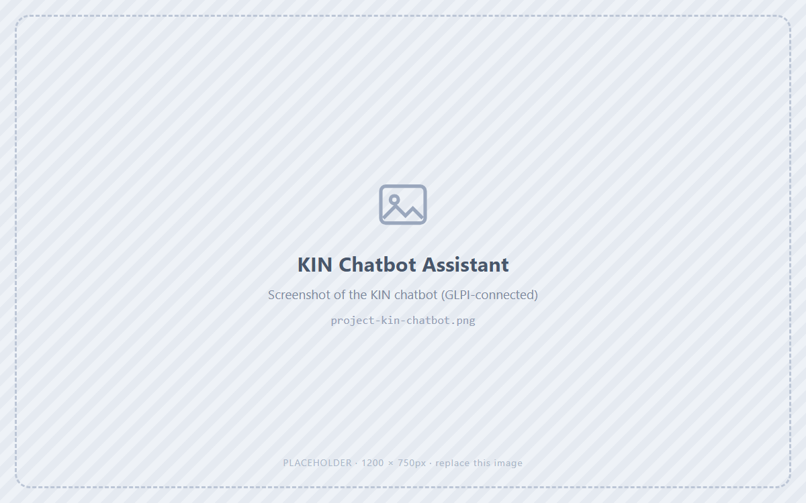

A helpdesk and information center inside App Center
KIN Chatbot Assistant is the employee-facing assistant in Application Center. Its purpose is broader than GLPI lookup: it provides a conversational starting point for helpdesk and information requests, with a customized Dify workflow coordinating the interaction behind the chat.
The workflow distinguishes employees, stores credential context and conversational memory, and contains the logic for calling APIs and connecting to MCP. GLPI and iHelp-related information form part of the connected operational context, rather than defining the assistant’s entire scope.
It is closely linked to the Enterprise AI Assistant & MCP Gateway. This case study focuses on the assistant’s behavior; the companion case study explains the shared integration layer.
Make the conversation useful for the person asking
A useful employee assistant needs more than a model response. It needs to recognize the employee, retain relevant conversational context, select a suitable capability, and work with the connected service using the appropriate credential context.
The challenge is to connect those responsibilities without losing the distinction between what the employee asked, what the workflow remembers, and what a source application actually returned.
Key features
- Helpdesk and information access
Employees ask through the familiar App Center interface, using the assistant as a common starting point for operational questions and information needs.
- Customized Dify orchestration
The workflow includes application-specific logic to interpret requests and coordinate API and MCP calls. The chatbot is the orchestrator of that interaction, not simply a display around a generic model.
- Employee-aware context
The workflow distinguishes the employee making the request so the interaction can use the relevant identity and connected-service context.
- Credentials and conversational memory
Credential handling supports connected-service interaction, while memory provides continuity within the assistant experience. These are different responsibilities: remembering a conversation does not establish permission to access a record.
- API and MCP connectivity
The assistant can call APIs and connect to MCP capabilities, including the shared gateway, according to the request and available integrations.
- Source-informed responses
Returned application information becomes context for the assistant’s response. Operational records remain in their source systems; a conversational summary is a view of that information.
From a question to a connected answer
The workflow joins the employee’s conversation with the capabilities needed to respond. Some requests can use an application API; others use MCP tools through the shared integration path.
The chatbot coordinates the interaction. It brings employee context, credentials, memory, and tool calls into one workflow. This logical diagram does not specify a credential-storage technology or memory-retention policy.
My contribution
I customized the Dify workflow and connected it to Application Center as an employee helpdesk and information assistant. My work includes employee differentiation, credential and memory handling, and the request logic that reaches API and MCP capabilities.
The integration work also connects the assistant to the broader MCP gateway, allowing a conversational workflow to draw on multiple enterprise services while retaining the employee’s existing access boundaries.
The conversation layer of a connected platform
Application Center provides the entry point. The customized Dify workflow coordinates conversational context and tool use. APIs and MCP services provide the application capabilities behind the assistant, with the shared gateway supporting the multi-service path.
Two case studies, one connected solution. The chatbot case study explains employee-facing behavior and orchestration. The enterprise assistant and gateway case study explains the broader cross-application integration.
The distinction is functional: the chatbot handles who is asking, what the conversation concerns, and which capabilities to invoke. The gateway provides a common connection to MCP services. Their close relationship does not make them two separate implementations of the same assistant.
Outcomes & engineering lessons
The assistant gives employees a conversational front door to information and helpdesk capabilities inside the portal they already use. Its custom workflow connects context, memory, and enterprise tools so the interaction can continue beyond a one-off question.
The main engineering lesson is to keep context and authority separate. A remembered fact, a stored credential, an employee identity, and permission to act are related inputs, but they are not interchangeable. Useful responses depend on both the source information and the access rules behind it.